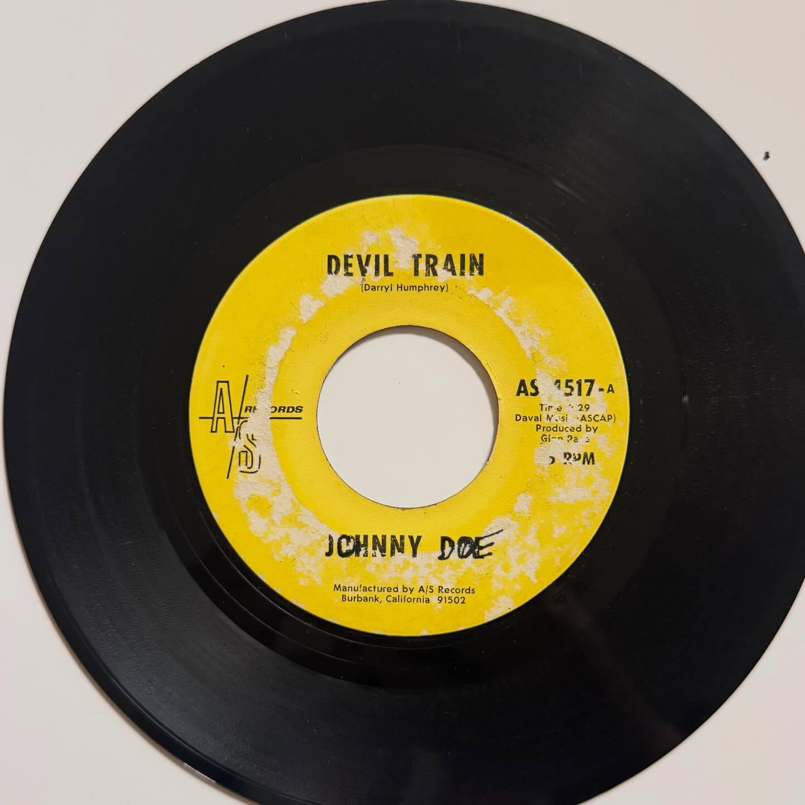

Johnny Doe (Darryl Humphrey)
Devil Train (side A shown)



record information
- artist
- Johnny Doe (Darryl Humphrey)
- a-side
- not verified
- b-side
- not verified
- label
- AIS Records (as printed)
- catalog no.
- AS 517-A (label reading)
- year / pressing
- not verified
research / notes
The yellow label photo shows “DEVIL TRAIN” (Darryl Humphrey) by JOHNNY DOE, with catalog marking AS 517-A and an AIS/AS Records imprint. The original caption clarifies this Johnny Doe is Darryl Humphrey, not Stan Furlow. The flip title remains unidentified.
original collection notes
I’ve always loved country songs that deal with the “devil” because they reveal that deeper, darker side of country music that never shies away from life’s rougher edges. “Devil Train” is one of those killer creepy tracks. It was recorded by Darryl Humphrey under the pseudonym Johnny Doe, and he has a great deep voice that goes well with the theme.
It’s worth noting that this isn’t the same “Johnny Doe” as Stan Furlow, who also used that name and happened to cover the same track in the ’70s!!
posted · no. 005